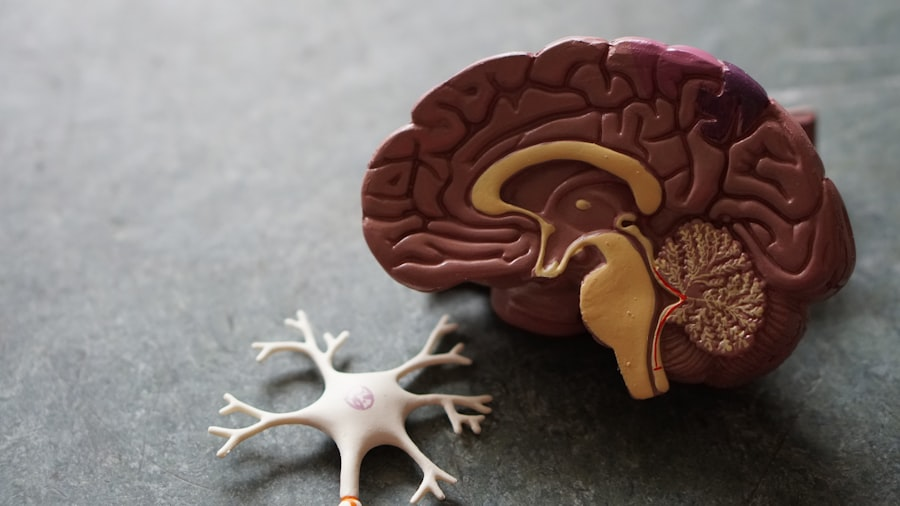

🗣️
Tell, show, do
We explain a tool, show how it works on a finger or a puppet, then use it. Nothing happens that your child hasn't already seen.
First times can feel big. Here's exactly what will happen, what to bring, and the little things we do to make sure your child leaves smiling.
We'll email a short "social story" with photos of the team and rooms, so the visit already feels familiar. Fill in the new-patient form online — it takes about five minutes.
Pop into the play corner while we say hi. There's no rushing from the waiting room — your child comes back when they're ready, with you right beside them.
We "count the teeth," polish, and apply fluoride, narrating every step in kid-friendly words. Nervous? We slow right down, and a first visit can just be a happy hello.
We chat with you about anything we noticed, answer your questions, and book the next visit. Then it's off to the treasure wall for a well-earned reward.
Keeping it simple. Here's everything you'll need for a smooth, speedy check-in:

A little nervousness is completely normal. These small touches make a big difference.
We explain a tool, show how it works on a finger or a puppet, then use it. Nothing happens that your child hasn't already seen.
Ceiling cartoons, noise-cancelling headphones, bubblegum toothpaste, and a steady, sing-song voice keep little minds busy and calm.
Need to stop and take a breath? Just raise a hand and we pause. Your child stays in control the whole way through.
Parents are welcome in the room for every visit. Often the best comfort is simply you, holding a hand.
We send a picture book of the visit so you can read it together beforehand and turn the unknown into something familiar.
Sat in the chair for the first time? That's a victory. We make sure every brave step is noticed and cheered.

Keep it positive and light. Try not to use words like "hurt," "shot," or "drill," even reassuringly — kids hear the scary word, not the "won't." We've got our own gentle vocabulary ready to go.
Pick a good time of day. A well-rested, recently-fed child is a happier patient. Morning visits often work beautifully for little ones.
Let us lead if nerves rise. If your child gets wobbly, it's okay to let us take over the talking. We do this every day and we love a gentle challenge.
Plan for about 45 minutes. That includes time to settle in, the exam and cleaning, and a relaxed chat with you afterwards. We never double-book, so you'll never feel rushed out the door.
Always. Many children do best with a parent right beside them, and we welcome you for every appointment, including treatment. You know your child better than anyone.
That's okay — it happens, and we never force it. For very anxious or very young children we use gentle "knee-to-knee" exams or simply spend the visit building trust. Progress over perfection, every time.
Yes. Bring your card and we'll handle the claims directly with your provider. We'll also give you a clear written estimate before any treatment beyond a routine checkup.
For most children, every six months. Some kids with a higher cavity risk benefit from more frequent fluoride visits — if that's the case, we'll explain why and agree on a plan together.
Absolutely. Tell us what helps your child feel safe when you book, and we'll arrange a quiet room, extra time, a familiar team, and as many gentle "practice" visits as you need. This is the heart of what we do.
Book your child's first visit online or give us a call. We'll send your welcome pack the same day.